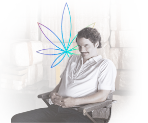

When you first heard about CBD, you probably thought...
Well, at least this is what our mothers imagined, when we told them we are getting into CBD business :)
Reality is, CBD (or cannabidiol, if one wants to sound smart or win at Scrabble) is a non-psychoactive compound of the cannabis plant with proven potential medical & health benefits.
You probably think: but wait, doesn't cannabis make you high? It surely does, but don't blame CBD for it - cannabis contains over 270 compounds, and only few of them are psychoactive. CBD is not one of them.
Indeed, CBD is non-psychoactive. In layman terms - it won't make you high. It is naturally produced by our body through our endocannabinoid system (see further for more details) and contributes to balancing our nervous system, relaxing us essentially. Last but not least, let's talk about its skintastic benefits for the skin and skincare. CBD anti-inflammation, anti-oxidant and effectove moisturizing properties make it the new kingpin of skincare ingredients. Read what WHO and other world class dermatologists have to say about it here.
Too good to be true? Well, there is a reason everyone is getting crazy over it.